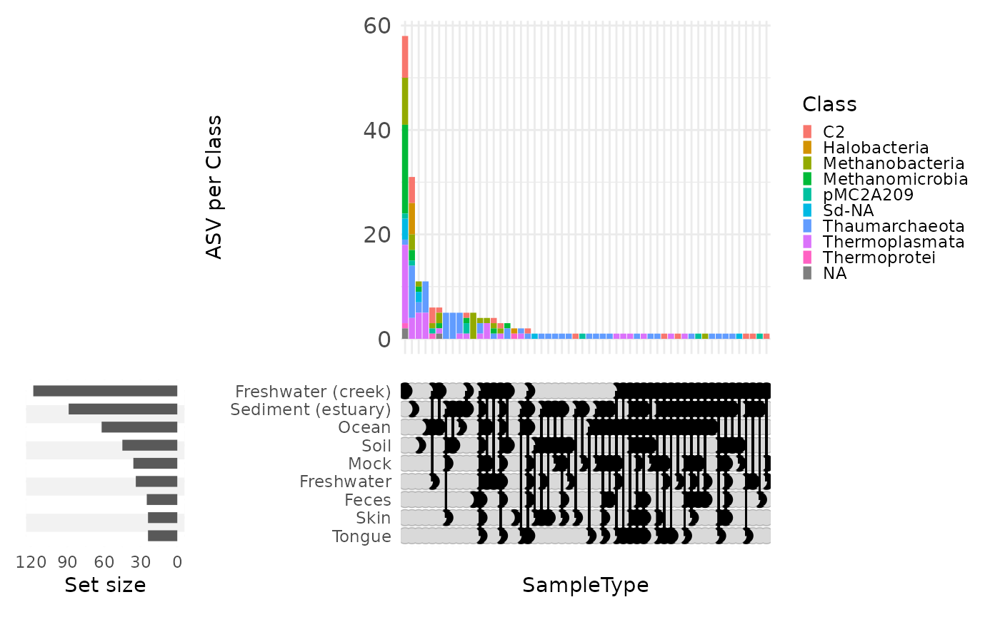

Introduction to MiscMetabar: an R package to facilitate visualization and reproducibility in metabarcoding analysis
Raison d’être
- Complete R packages dada2 and phyloseq
- Useful visualizations (
biplot_pq,circle_pq,upset_pq,ggvenn_pq) - Facilitate the use of targets package
Quick overview
For an introduction to metabarcoding in R, Please visite the state
of the field vignettes. The import,
export and track vignette explains how import and export
phyloseq object. Its also show how to summarize useful
information (number of sequences, samples and clusters) accross
bioinformatic pipelines.
If you are interested in ecological metrics, see the vignettes describing alpha-diversity and beta-diversity analysis. The vignette filter taxa and samples describes some data-filtering processes using MiscMetabar and the reclustering tutorial introduces the different way of clustering already-clustered OTU/ASV. The vignette tengeler explore the dataset from Tengeler et al. (2020) using some MiscMetabar functions.
For developers, I also wrote a vignette describing som rules of codes.
Summarize a physeq object
library("MiscMetabar")
#> Warning: replacing previous import 'S4Arrays::makeNindexFromArrayViewport' by
#> 'DelayedArray::makeNindexFromArrayViewport' when loading 'SummarizedExperiment'
library("phyloseq")
library("magrittr")
data("data_fungi")
summary_plot_pq(data_fungi)
Create an interactive table of the tax_table
data("GlobalPatterns", package = "phyloseq")
tax_datatable(subset_taxa(
GlobalPatterns,
rowSums(GlobalPatterns@otu_table) > 100000
))Sankey diagram of the tax_table
gp <- subset_taxa(GlobalPatterns, GlobalPatterns@tax_table[, 1] == "Archaea")
sankey_pq(gp, taxa = c(1:5))Upset plot for visualize distribution of taxa in function of samples variables
upset_pq(gp, "SampleType", taxa = "Class")
References
Tengeler, A.C., Dam, S.A., Wiesmann, M. et al. Gut microbiota from persons with attention-deficit/hyperactivity disorder affects the brain in mice. Microbiome 8, 44 (2020). https://doi.org/10.1186/s40168-020-00816-x
Session inform
sessionInfo()
#> R version 4.3.2 (2023-10-31)
#> Platform: x86_64-pc-linux-gnu (64-bit)
#> Running under: Ubuntu 22.04.3 LTS
#>
#> Matrix products: default
#> BLAS: /usr/lib/x86_64-linux-gnu/openblas-pthread/libblas.so.3
#> LAPACK: /usr/lib/x86_64-linux-gnu/openblas-pthread/libopenblasp-r0.3.20.so; LAPACK version 3.10.0
#>
#> locale:
#> [1] LC_CTYPE=C.UTF-8 LC_NUMERIC=C LC_TIME=C.UTF-8
#> [4] LC_COLLATE=C.UTF-8 LC_MONETARY=C.UTF-8 LC_MESSAGES=C.UTF-8
#> [7] LC_PAPER=C.UTF-8 LC_NAME=C LC_ADDRESS=C
#> [10] LC_TELEPHONE=C LC_MEASUREMENT=C.UTF-8 LC_IDENTIFICATION=C
#>
#> time zone: UTC
#> tzcode source: system (glibc)
#>
#> attached base packages:
#> [1] stats graphics grDevices utils datasets methods base
#>
#> other attached packages:
#> [1] magrittr_2.0.3 MiscMetabar_0.7.7 dplyr_1.1.4 dada2_1.30.0
#> [5] Rcpp_1.0.12 ggplot2_3.4.4 phyloseq_1.46.0
#>
#> loaded via a namespace (and not attached):
#> [1] bitops_1.0-7 deldir_2.0-2
#> [3] permute_0.9-7 rlang_1.1.3
#> [5] ade4_1.7-22 matrixStats_1.2.0
#> [7] compiler_4.3.2 mgcv_1.9-0
#> [9] png_0.1-8 systemfonts_1.0.5
#> [11] vctrs_0.6.5 reshape2_1.4.4
#> [13] stringr_1.5.1 pkgconfig_2.0.3
#> [15] crayon_1.5.2 fastmap_1.1.1
#> [17] ellipsis_0.3.2 XVector_0.42.0
#> [19] labeling_0.4.3 utf8_1.2.4
#> [21] Rsamtools_2.18.0 rmarkdown_2.25
#> [23] ragg_1.2.7 purrr_1.0.2
#> [25] xfun_0.42 zlibbioc_1.48.0
#> [27] cachem_1.0.8 GenomeInfoDb_1.38.6
#> [29] jsonlite_1.8.8 biomformat_1.30.0
#> [31] highr_0.10 rhdf5filters_1.14.1
#> [33] DelayedArray_0.28.0 Rhdf5lib_1.24.2
#> [35] BiocParallel_1.36.0 jpeg_0.1-10
#> [37] parallel_4.3.2 cluster_2.1.4
#> [39] R6_2.5.1 bslib_0.6.1
#> [41] stringi_1.8.3 RColorBrewer_1.1-3
#> [43] ComplexUpset_1.3.3 GenomicRanges_1.54.1
#> [45] jquerylib_0.1.4 SummarizedExperiment_1.32.0
#> [47] iterators_1.0.14 knitr_1.45
#> [49] IRanges_2.36.0 Matrix_1.6-1.1
#> [51] splines_4.3.2 igraph_2.0.1.1
#> [53] tidyselect_1.2.0 abind_1.4-5
#> [55] yaml_2.3.8 vegan_2.6-4
#> [57] codetools_0.2-19 hwriter_1.3.2.1
#> [59] lattice_0.21-9 tibble_3.2.1
#> [61] plyr_1.8.9 Biobase_2.62.0
#> [63] withr_3.0.0 ShortRead_1.60.0
#> [65] evaluate_0.23 desc_1.4.3
#> [67] survival_3.5-7 RcppParallel_5.1.7
#> [69] Biostrings_2.70.2 pillar_1.9.0
#> [71] MatrixGenerics_1.14.0 DT_0.31
#> [73] foreach_1.5.2 stats4_4.3.2
#> [75] generics_0.1.3 RCurl_1.98-1.14
#> [77] S4Vectors_0.40.2 munsell_0.5.0
#> [79] scales_1.3.0 glue_1.7.0
#> [81] tools_4.3.2 interp_1.1-6
#> [83] data.table_1.15.0 GenomicAlignments_1.38.2
#> [85] fs_1.6.3 rhdf5_2.46.1
#> [87] grid_4.3.2 tidyr_1.3.1
#> [89] ape_5.7-1 crosstalk_1.2.1
#> [91] latticeExtra_0.6-30 colorspace_2.1-0
#> [93] patchwork_1.2.0 networkD3_0.4
#> [95] nlme_3.1-163 GenomeInfoDbData_1.2.11
#> [97] cli_3.6.2 textshaping_0.3.7
#> [99] fansi_1.0.6 S4Arrays_1.2.0
#> [101] gtable_0.3.4 sass_0.4.8
#> [103] digest_0.6.34 BiocGenerics_0.48.1
#> [105] SparseArray_1.2.4 htmlwidgets_1.6.4
#> [107] farver_2.1.1 memoise_2.0.1
#> [109] htmltools_0.5.7 pkgdown_2.0.7
#> [111] multtest_2.58.0 lifecycle_1.0.4
#> [113] MASS_7.3-60